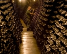

Bodega Roura
La bodega Roura, en funcionamiento desde 1990, produce bajo su marca vinos DO Alella, Catalunya y cavas. La primera parte describe cómo Dante se halla perdido en un bosque oscuro en su mediana edad y entra en una cueva al pie del monte Sion, cerca de Jerusalén. Tres animales alegóricos le salen al paso: una pantera, una loba y un león. Estos animales representan los pecados que pueden atacar a Dante. La pantera representa la lujuria y la ciudad de Florencia que lo ha exiliado. La loba es, según los comentaristas, el pecado de la codicia, y más allá de esto el poder temporal del Papa en Roma. El león representa la soberbia, y el poder de Francia, que pretendía dominar Italia.
Inicio